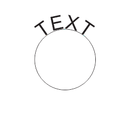

Text Placement в CorelDraw X5
Legacy / 04.12.2011, 08:33/00:41
Форум:
Никак не могу найти функцию Text Placement в CorelDraw X5.
В учебнике показывается эта функция, а я её нигде не могу обнаружить.
Поэтому приходится вручную текст выравнивать.
Подскажите пожалуйста где эта хрень находится?
См. прикреплённый скриншот.

Её убрали, потому что она уже ни несёт ни какого реально полезного функционала. Для того что бы поместить текст в нужное место, достаточно ухватиться за красный ромбик и потянуть в нужную сторону. При этом в определённые моменты появляется красная разделительная черта указывающая на точную привязку. Удерживание Shift фиксирует вращение текста на одной линии удалённости от базового пути.
Тем не менее, Text Placement можно вернуть, вытащив её из списка команд. Как это сделать можно прочитать в материале Настройка интерфейса CorelDRAW
Спасибо!
Вы наверное не совсем поняли, почему мне это надо.
Я прекрасно знаю, про "красный ромбик" - я и написал, что вручную текст выравниваю, имея в виду этот ромбик. А надо, чтобы автоматом и точно по центру происходило выравнивание - я подумал, что Text Placement как раз это делает.
:)
Legacy, я же написал что красная разделительная черта указывает на точную привязку.

А, понял.
Но получается не точное выравнивание и приходится снова делать вручную.
Legacy, не знаю, лично у меня всё точно выравнивается.
Снова попробовал - создал окружность и напечатал текст по ней. Потом выровнял как вы сказали. И снова выравнивание получилось неточным. Всё делал очень аккуратно и медленно - именно когда появлялась эта красная палочка я останавливался и фиксировал.
Вот прилагаю скриншот. Внизу красная палочка по центру. А вверху, как видите, ещё остаётся большое расстояние до центра.
Красный маркер внизу показывает что край (не центр) текста выровнен по нижнему центру!
Это я понимаю. Но мне то нужно общее выравнивание текста. А не одной его стороны.
Legacy, Общее выравнивание происхобит посредством нахождения центра одного объекта, к параллельности центра другого объекта. В данном случае середина текстовой части определяется красным разделительным маркером (появляющимся по центру текста а не по краям), в момент проведения параллели между центром (квадрантом) другого объекта, круга. Обратите внимание что разделительная черта, при выравнивании мелькает не только в начале и конце вашего текста но и по середине.
Legacy, Ответ в сообщении #3 :) Если не понятно, я не знаю как ещё объяснить / показать.
Страницы